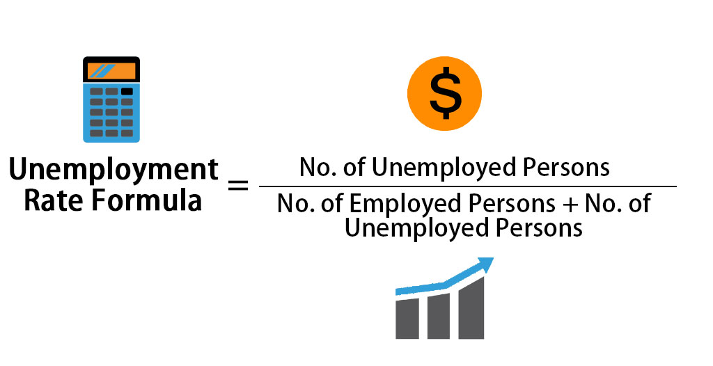

How to Measure Unemployment?
Economists typically focus on the unemployment rate. The unemployment rate is expressed as a percentage, and is calculated by

The unemployment rate is calculated by expressing the number of unemployed persons as a percentage of the total number of persons in the labour force.
The labour force (formerly known as the economically active population) is the sum of the number of persons employed and the number of persons unemployed.
As defined by the International labor organization, "unemployed workers" are those who are currently not working but are willing and are able to work for pay, currently available to work, and actively searching for work.
|